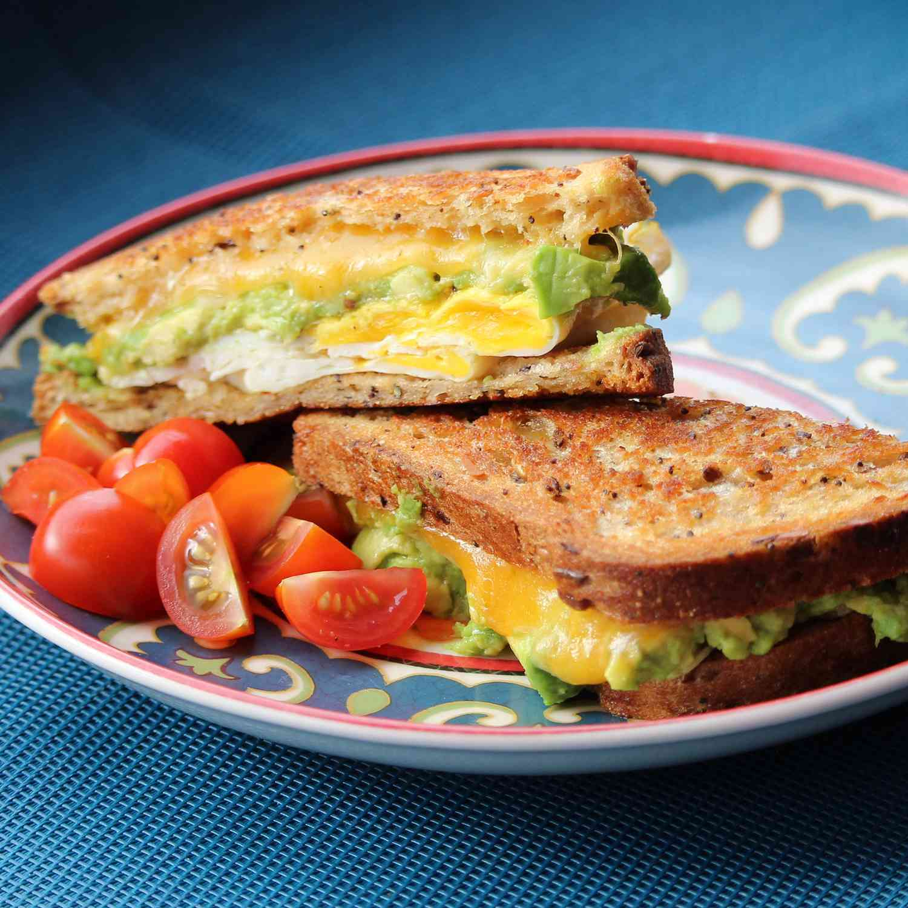

Avocado Sandwich

Description
Make this egg and avocado sandwich for a delicious restaurant-style breakfast at home! It's quick, easy, and delicious. The sliced avocado is what makes this sandwich pop and gives it a unique flavor. It is chock-full of protein, as well, so this sandwich will keep you full until lunchtime.
Ingredients
- 1 tablespoon olive oil
- 2 large eggs
- salt and ground black pepper to taste
- 1 tablespoon butter, softened
- 2 slices Italian bread
- 1 ounce Swiss cheese, sliced
- 1 ounce Cheddar cheese, sliced
- 1/2 ripe avocado, sliced
Steps
- Gather the ingredients.
- Heat olive oil in a skillet over medium heat. Crack eggs into skillet; cook for 1 to 2 minutes. Flip and cook egg until done, 2 to 5 minutes more. Transfer eggs to a plate and season with salt and pepper.
- Spread butter onto 1 side of each bread slice. Heat a skillet over medium heat. Lay bread slices in the hot skillet, butter-side down. Quickly layer Swiss cheese, 1 fried egg, Cheddar cheese, 1 fried egg, avocado, and remaining bread slice, butter-side up.
- Carefully flip sandwich to grill other side until golden brown, 3 to 4 minutes.
- Remove sandwich from skillet and cut in half.